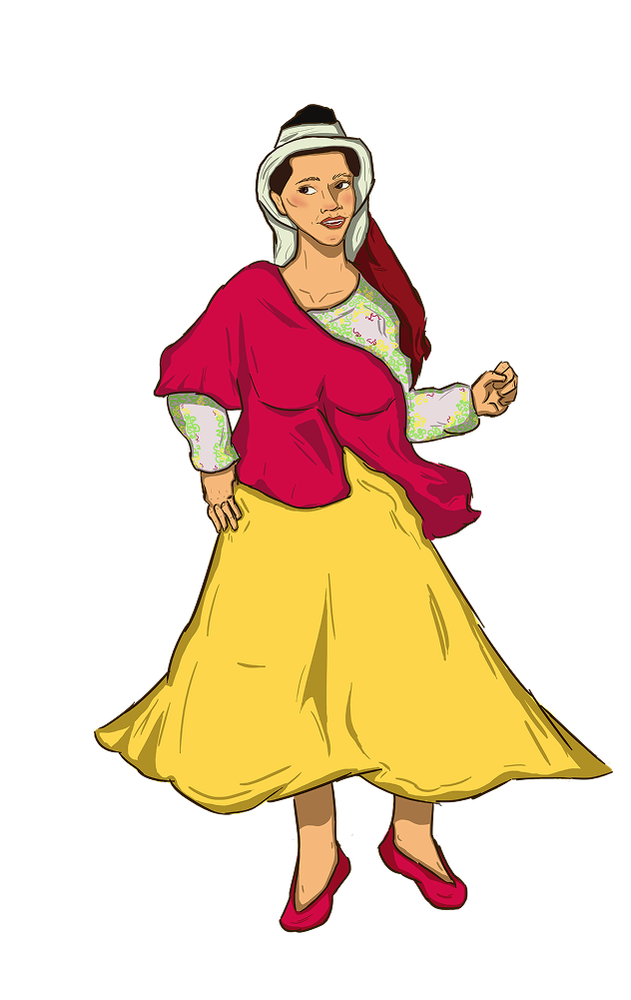
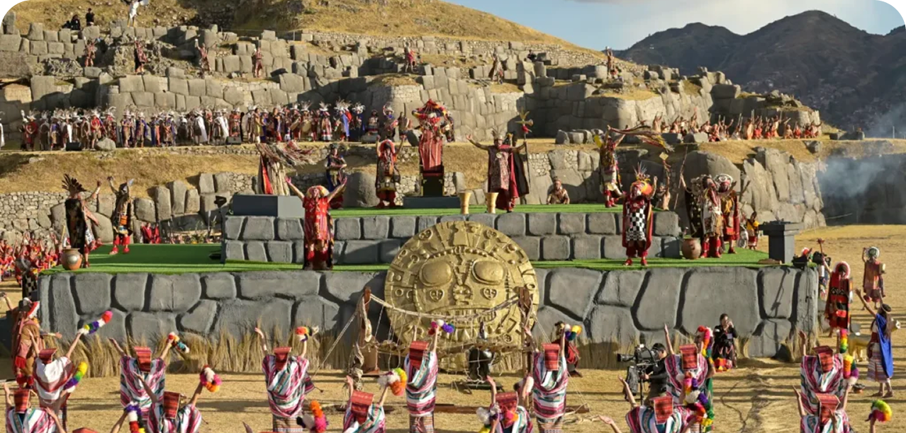
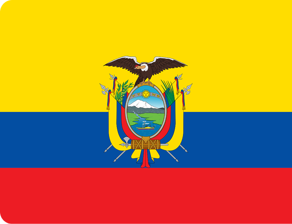
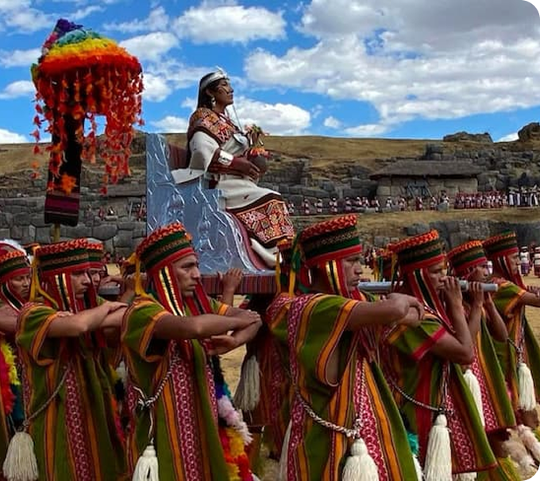

EQUADOR
Inti Raymi
Diablo Huma

O Diablo Huma, também chamado de Aya Huma ou Aya Uma, é uma das figuras mais importantes das celebrações do Inti Raymi, tradicional festa andina dedicada ao Sol e à fertilidade da terra. Apesar do nome “Diablo” ter sido associado ao personagem durante a colonização espanhola, sua origem está ligada à espiritualidade indígena andina e não à ideia cristã de demônio.
O personagem surgiu nas comunidades indígenas dos Andes, especialmente no atual Equador, dentro das celebrações do Inti Raymi, a Festa do Sol, herança cultural do Império Inca. O festival acontece durante o solstício de junho e celebra a colheita, a renovação da vida e a gratidão ao Sol (Inti) e à Pachamama (Mãe Terra).
A Chinuca é um dos personagens tradicionais das celebrações do Inti Raymi e das Fiestas del Sol em regiões andinas do Equador, especialmente em Cayambe. Ela integra o conjunto de figuras cerimoniais que participam dos cortejos, danças e rituais ligados à Festa do Sol, ao lado de personagens como o Diablo Huma (Aya Huma), os Aruchicos, os Campanilleros e as Warmis.
A Chinuca faz parte das manifestações culturais indígenas associadas ao Inti Raymi, celebração ancestral dedicada ao Sol, à fertilidade da terra e à gratidão pelas colheitas. Essas festividades existem desde períodos anteriores à expansão incaica e continuaram sendo praticadas nas comunidades andinas mesmo após a colonização espanhola.
Chinuca


Celebrado todo 21 de junho, durante o solstício de inverno, é uma festividade de origem indígena que reforça os laços com a natureza, a espiritualidade e a história andina. A celebração inclui rituais como a Pampamesa, onde alimentos típicos são compartilhados em comunidade como forma de gratidão, além de danças e representações simbólicas, como a do Aya Uma, personagem de máscara de duas faces que conecta os participantes ao sol, à lua e à terra. Também faz parte da tradição a escolha da Ñusta, a princesa do festival. O principal local que ocorre o evento é no parque arqueológico em Ingapirca, que possui estruturas do passado.

Localizado entre os Andes, a Amazônia e o Oceano Pacífico, o Equador possui forte herança indígena. Além do espanhol, idiomas como o kichwa e o shuar continuam presentes em diversas comunidades. Antes da colonização espanhola, a região fazia parte do Império Inca, cujas tradições permanecem vivas até hoje.
O Inti Raymi, a Festa do Sol, é uma das maiores expressões dessa continuidade cultural. Celebrando a colheita, a fertilidade da terra e a gratidão à Pachamama, a festividade reúne personagens como o Aya Huma, símbolo da espiritualidade andina e da resistência indígena. Mesmo após séculos de colonização, o festival preserva conhecimentos ancestrais transmitidos entre gerações.
